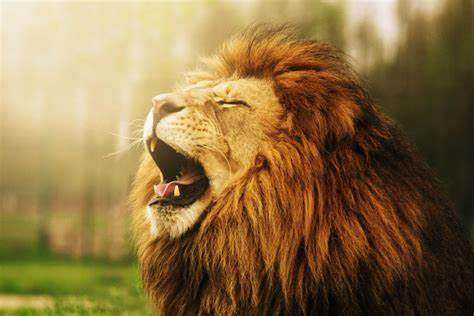

Nuotraukos šaltinis
Liūtas
Gyvūnas
Liūtas - katinų šeimos plėšrus žinduolis. Gyvena savanose, miško savanose,
krūmynuose.
- Gyvenimo trukmė: 10-14 metai
- Masė: 190 kg patinas, 130 kg patelė
- Liūtai vaikšto kulnais nesiekdami žemės
- Kuo tamsesni liūto kailiai, tuo jis vyresnis
-
Šie gyvūnai yra mėsėdžiai, jų grobius gali tapti ir kiškis, ir stambus
buivolas
© 2023 Edvardas Dainovskis